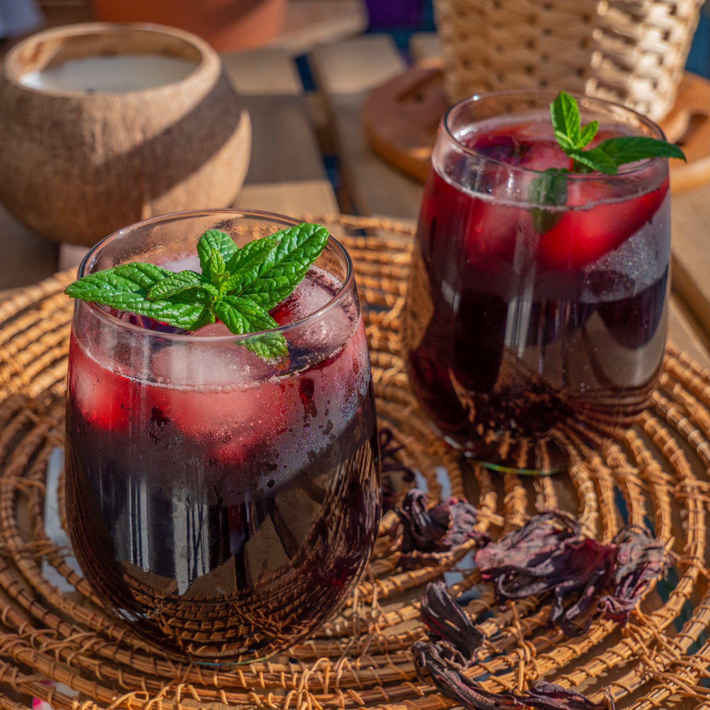

Bissap (Hibiscus) Juice

Description
Bissap Juice is a popular West African beverage made from dried hibiscus flowers (known as sorrel in some regions).
It’s refreshing, tangy, and can be sweetened to taste.
This deep red drink is packed with flavor and often enhanced with additional spices or herbs like mint or ginger.
Served chilled, Bissap is perfect for hot days—or any time you want a tart, floral refresher!
Ingredients (global)
- Hibiscus flowers: Dried hibiscus (bissap) flowers.
- Sweetener: Sugar, honey, or your preferred sweetener.
- Flavorings: Optional additions like mint, ginger, or lemon juice.
- Water: Base for steeping the hibiscus flowers.
- Optional garnishes: Additional mint leaves or sliced citrus.
Ingredients (specificity)
- 1 cup dried hibiscus flowers (bissap)
- 6 cups water
- 1/2 to 1 cup sugar (adjust to taste)
- 1 tablespoon grated fresh ginger (optional)
- 1 handful fresh mint leaves (optional)
- 1 tablespoon lemon or lime juice (optional, for extra tang)
- Extra mint leaves or citrus slices for garnish
Steps
Here's a brief overview of how Bissap Juice is usually made:
- Rinse and steep the dried hibiscus flowers in boiling water.
- Strain the liquid to remove the flowers.
- Add sweetener and optional flavorings.
- Chill the juice, then serve over ice.
- Garnish as desired before serving.
Directions
- Gather your ingredients, ensuring the hibiscus flowers are free from debris.
- In a large pot, bring the water to a boil. Rinse the hibiscus flowers under cool water to remove any dust or impurities, then add them to the boiling water.
- Reduce heat and let the flowers simmer for about 10 to 15 minutes. Add ginger if you want a subtle spicy kick.
- Remove the pot from heat, stir in mint leaves (if using), and let steep for an additional 5 minutes.
- Strain the mixture into a pitcher or large bowl, discarding the flowers (and ginger pieces if used).
- Stir in the sugar (or other sweetener), tasting as you go to achieve your preferred sweetness.
- If desired, add lemon or lime juice for extra tang.
- Refrigerate the juice until well chilled. Serve over ice for maximum refreshment.
- Garnish each glass with fresh mint leaves or citrus slices.
- Enjoy your homemade Bissap Juice!
Home